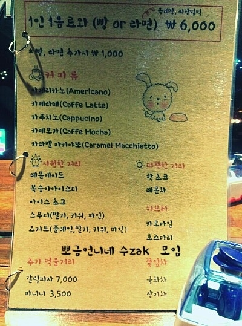
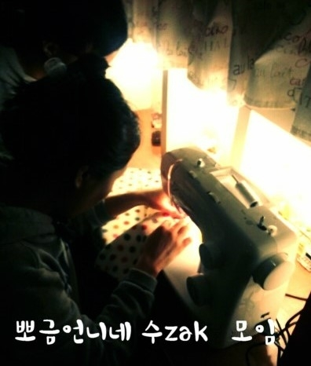

매주일요일마다 애견카페로 변신하는 일반 카페가있답니다 그곳은 바로 전라북도전주시 효자동 3가 문학대근처에 위치한 마을버스라는 카페에요~~~ 원래는 일요일은 쉬는날이었는데요 유기견을 키우시는 사장님 내외분께서 저희들의 소원을 들어주고자 매주한번씩은 애견과 동반가능한 카페를 열어주신거죠 ~~ 전라북도 전주시 효자동에 위치한 예쁘고 분위기도좋고 맛있고 저렴한 카페 평일은 일반카페로 운영되고 일주일중 단하루 반려견들을 위한 특별한 Day 애견카?페를 운영하는 일요일 소개합니다.: ) MAEUL BUS 마을 버스 일요일 전라북도 지역 특히 전주지역 반려견들과함께 디저트와 음료를 즐기며 반려견 핸드메이드 제품도 구경하고 아주저렴하게 구매도 할수있는 (잘하면 얻어가기도하고?^^) 반려견과함께입장가능한 일요애견카페 마을버스입니다~ 위치는 전주에 애완견들의 운동장이기도하고 애견들의 집결지이기도한 문학대공원 근처! 문학초 옆 상가!!이지도를보고찾아오시든지 아니면 네비를쳐서 찾아오시면되요~ 주로 애견카페는 음료가격이 딱정해져있죠 전주는 1인입장료가 7000원 혹은 8000원에 음료 한잔 이 무조건필수에요 아니면 1인 1음료를 시켜먹으면 되는데 그음료의가격이 좀 후덜덜 한 점도있지만 우리 아가들을위해 그정도쯤은 훅훅 써버리지요 ㅋㅋㅋ 그래도~! 이왕이면 맛있는 음료와 디저트를 먹으면서 친구들도많고 근처에 아이들이뛰어놀 공원도있구 카페내부에 구경할것도 많이 있다면 정말정말 좋겠죠? 바로 ! 그것을 충족해줄 단하나의 애견카페 거기가 마을 버스 라는 이야기입니다~
마을버스는 강아지데이를 오로지 일주일에 단한번 온리 일요일 매주 단한번 온리 네시간 단 4시간만 운영을 한답니다~ 그러니더욱 희소가치가 대박이라죠 ㅋㅋㅋㅋㅋㅋㅋㅋㅋㅋㅋ 우후 난 너무좋아 마을버스는 평일에도 일반손님들외에 멀리서도일부로 찾아오는손님이 있을정도로 매니아가 생기기도했고 분위기좋고 맛좋고 저렴한 카페로 소문이났는데요 그러다보니 원래너무 힘드셔서 예전엔 일요일날 휴무였는데 저희가 쪼르고쫄라서 일요일에도 문을열어주시기로 결정해주신거랍니다 사장님부부분도 유기견을 키워주시고 계시거든요^^그래서 저희아가들을보고 ㅋㅋㅋ 마을버스 강아지 데이 사용시 주의사항에 대해 일단알려드릴께요 마을버스에 강아지와 함께 동반하실시에는요~ 1.마킹&생리 하는아이는 매너벨트,위생팬티를 착용시켜주셔야합니다. 2. 전염성질병이있거나 의심이되는아가는 입장이 불가하답니다. ㅜㅜ 3.아이가 매장네에 쉬와응가를하면 배치되있는 휴지를 사용해 치운후 매장테라스에 배치되어있는 휴지통에버려주시면 된답니다^^ 4.대형견은 출입을 자제해주세요^^(양해부탁드립니다소형견들이많고 매장공간이협소합니다.) 5.출입시 입장료(음료디저트이용료)선불입니다!들어오시면 착석후 주문을 먼저해주시면 됩니다^^ 기타사항 반려견이없어도 입장가능하답니다^^(강아지를 좋아하신다면 환영합니다) 강아지의류만들기에 관심있으신분들은 일요일에 마을버스에오시면 모임하시는분들을 만날수있습니다^^ 애완견&여성 핸드메이드 악세사리 의류를 저렴한가격으로 구매할수있는 절호의찬스!( 유기견을돕기위해 요날에만 저렴하게판매를한답니다^^) 자이제그럼 마을버스의 메뉴판을 봐볼까여? 우린 솔직히 이게가장 궁금하자나여~~~~~~~~~~~~~~~~~~~~  장난아니죠.. 아니죠 사장님사머님 장난치시려나봅니다.. 잠시장난치셔보려고.. 어느카페를 가보세여,, 입장료가 6000원입니다 그런데 저기있는음료를 프리로 하나골라여 그리고 빵이나 라면을 프리로하나골라서 먹을수있습니다... ? 애견카페.. 음료 한정적이고 굉장히 심플한 음료에 ... 솔직히 퀄리티가..좀떨어지는데요.,, 음 마을버스음료요? ㅋㅋㅋㅋ 메뉴부터.. 고퀄이죠 걍카페 스무니 요거트스무디 한잔에 얼마죠? 감격이네...나.... ?그리고 저희는 뭐자주먹는 갈리핏자와~ 파니니 저 파니니왕팬이져,,, 파니니 정말 ...디집니다.. 정말저렴합니다.... 육천원에 음료와 라면 전 마을버스사랑합니다..... 저희는 늘 옷을만드는데요 요새는 유기견옷도만들고있어요 덤으로 여러가지몇가지옷을 더제작해 오시는분들에게 유기견 성금을 모으고자 판매를 하려고해요 저렴하게~~ 오늘 제가 몰래찍은 사진과 내부모습조금 올릴게요~ 전에 제가 마을버스에 올린포스팅이나 http://blog.naver.com/cbr1023 베들링턴테링 다미 차볼언니의 블로그에가셔도 마을버스의포스팅이있으니 구경해보러 가셔용~~~  열미싱중인 저희모임 ㅋㅋㅋㅋ사진입니다. 마을버스 일층 공간 ㅋㅋㅋ 이층 다락방에있는ㄷ ㅏ미 사진~~~ 전북 지역 애완견을 키우시는 모든견주분들은 일주일에한번 아이들을위해 아이들과함께 근처 문학대공원에서 산책후 마을버스로오셔서 따뜻한 차혹은 음료로 한잔과 디저트드시고 아이들도 친구들사귈수있는좋은기회되게! 또 서로 좋은정보 공유도하고 우리아이들 악세사리 또 견주분들의 악세사리도 득템하고 가시는 좋은 행복한날이되도록 꼭 일요일은 어디루?